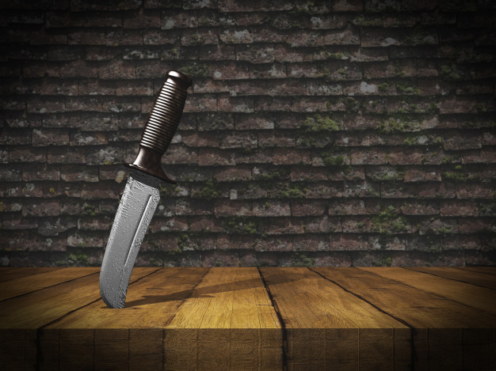

You bolt to the dining room table. As you grab the money, you hear a thud hit the table. You slowly look up and see that there is a knife in the table where your hand just was.
You look to the door but the lady isnt there. Where is she? Where did she go?
The sound of rain brings you back to your senses and you think to yourself, I must go and I must go now. You look around, you see the windows open but its a 6 foot drop at the very least.
What do you decide to do?